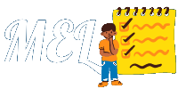
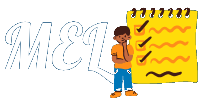

Il Quadro Comune di Riferimento Europeo (QCER) identifica tre aree di competenza della lingua: Base, Autonomia e Padronanza. Ciascuna di queste aree è costituita da due livelli (per un totale dunque di sei). Ad ognuno di questi livelli corrisponde un diverso grado di preparazione.
È capace di utilizzare e comprendere solo frasi di uso comune, basilari. È in grado di presentarsi, fare domande riguardo cose concrete, e dare le proprie informazioni anagrafiche. È in grado di interagire con altre persone purché esse parlino in modo lento e chiaro.
È capace di utilizzare e comprendere frasi comuni relative ad argomenti concreti. È in grado di comunicare in modo discorsivo ma semplice, riguardo lo scambio di informazioni tipiche della routine. Sa parlare della sua vita ed esprimere bisogni immediati.
È capace di comprendere, comunicare e scrivere testi riguardo ad ambiti comuni della vita di tutti i giorni (scuola, lavoro, sport, hobby…). È in grado di esprimere concetti astratti e di spiegare dei ragionamenti.
È capace di comprendere testi di media difficoltà sia riguardo temi concreti che astratti. Sa inoltre discutere riguardo il campo su cui è specializzato. È in grado di comunicare senza troppa fatica con un madrelingua e di produrre testi complessi.
È capace di comprendere pienamente testi di elevata complessità. Si esprime in modo naturale e flessibile riguardo ogni ambito. È in grado di produrre testi a livello professionale – accademico.
Comprende senza problemi la lingua, in qualunque sua forma. È capace di riassumere perfettamente le informazioni e di comunicarle in modo spontaneo, scorrevole ed esatto. È in grado di evidenziare anche le più piccole sfumature di significato.